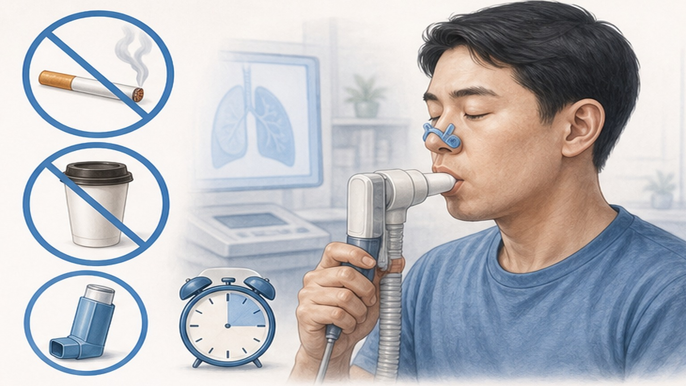
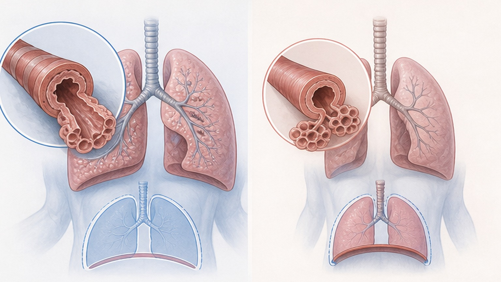
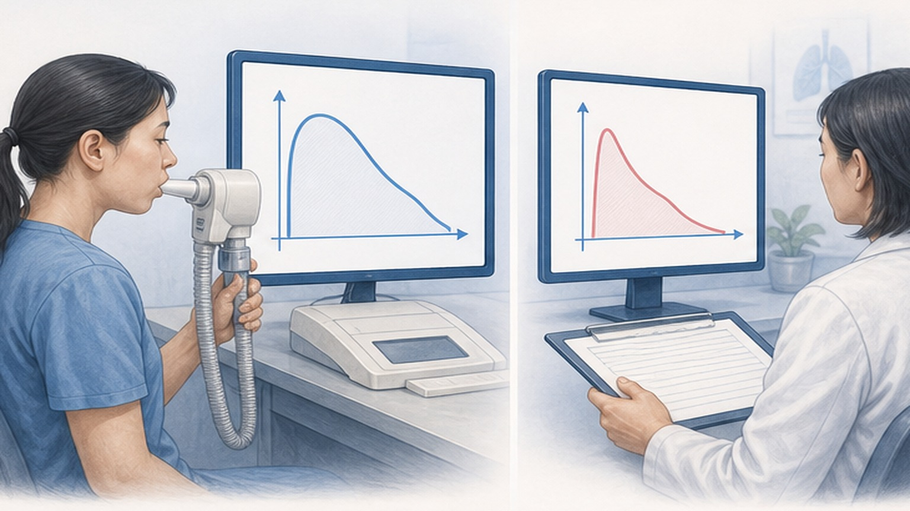
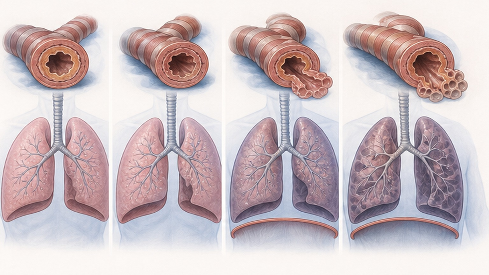

폐기능검사 (PFT),
내 폐는 얼마나 건강할까?
FVC · FEV1 · FEV1/FVC — 폐가 공기를 얼마나 잘 들이마시고 내쉬는지 객관적으로 측정합니다
왜 폐기능검사를 하나요?
폐기능 검사는 호흡기 질환의 진단·평가·추적 관찰을 위한 가장 기본적이고 객관적인 검사입니다
검사에서 보는 3가지 핵심 수치
폐기능 검사 결과지에서 가장 먼저 확인하는 주요 지표 — 폐의 크기·기관지 통로·속도 비율
검사 전, 이렇게 준비해 주세요
정확한 결과를 위해 검사 전 일정 시간 동안 흡연·약물·자극물을 피해야 합니다
폐기능 검사는 안전하고 비침습적인 검사입니다. 다만 정확한 결과를 위해 흡연·약물·카페인을 일정 시간 동안 피해 주세요.
검사 자체는 약 15~30분 소요되며 통증이 없습니다. 검사실에서 마우스피스를 입에 물고 코집게를 한 채로 큰 숨을 들이쉬고 강하게 내뱉는 동작을 3~5회 반복합니다. 환자의 노력에 따라 결과가 달라지므로 검사자의 안내에 적극적으로 협조해 주시는 것이 무엇보다 중요합니다.

이런 증상·상황에서 검사가 필요합니다
호흡기 증상 평가, 만성 폐질환 진단, 수술 전 평가, 직업성 노출 선별 등에 폭넓게 활용
두 가지 패턴 — 폐쇄성 vs 제한성
검사 결과의 핵심은 이 두 패턴을 구별하는 것입니다 — 원인 질환과 치료 방향이 완전히 다릅니다
- 기관지가 좁아져서 공기가 잘 안 나감
- FEV1/FVC ↓ (< LLN 또는 < 0.7)
- 대표 질환: COPD · 천식 (Asthma)
- 주요 원인: 흡연, 대기오염, 알레르기
- 기관지확장제 반응 확인 필요
- 유량-용적 곡선: 호기 곡선 오목한 형태
- 폐 자체가 작아져서 공기를 충분히 못 담음
- FEV1/FVC 정상 또는 ↑, FVC ↓
- 대표 질환: 폐섬유화 (ILD), 흉벽 질환
- 확진에 TLC 측정 필수 (TLC ↓)
- 의원급에서는 종합병원 의뢰 필요
- 혼합성 (Mixed): 폐쇄성 + 제한성 동시 존재

정상 vs 비정상 판정 기준
같은 나이·키·성별의 건강한 사람과 비교 — % predicted와 Z-score 두 가지 기준 병행

기관지확장제 반응 검사 (BDR)
기관지확장제 투여 전·후의 폐기능 변화로 가역성 (Reversibility) 평가 — 천식 진단의 핵심
COPD 중증도 분류 (GOLD 2025)
기관지확장제 투여 후 FEV1/FVC < 0.7 → COPD 진단 후 FEV1 % predicted로 4단계 분류

검사 결과 후 — 이런 신호는 응급
폐 질환 진단을 받았거나 검사 결과가 나쁜 경우, 아래 증상은 즉시 응급실로
오늘 꼭 기억할 핵심 8가지
폐기능검사로 확인하는 폐 건강 — 검사·해석·관리의 핵심 포인트
폐 건강, 미리 확인하고
꾸준히 관리하세요
궁금한 점이 있으시면 진료 시 언제든 문의해 주세요 — 함께 폐 건강을 지키겠습니다
광교중앙로 298, 4층
토요일 08:30~13:30
같은 자료를 다시 볼 수 있어요